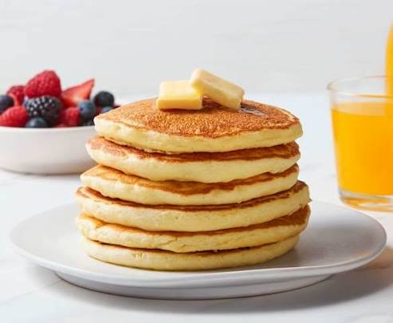

Pancake Recipe

Description:
A pancake, also known as a hotcake, griddlecake, or flapjack, is a flat type of batter bread like cake,
often thin and round, prepared from a starch-based batter that may contain eggs, milk, and butter, and then
cooked on a hot surface such as a griddle or frying pan.
Ingredients:
- 1 ½ cups all-purpose flour
- 3 ½ teaspoons baking powder
- 1 tablespoon white sugar
- ¼ teaspoon salt, or more to taste
- 1 ¼ cups milk
- 3 tablespoons butter, melted
- 1 large egg
Steps:
- Gather all ingredients.
-
Sift flour, baking powder, sugar, and salt together in a large bowl. Make a well in the center and add
milk, melted butter, and egg; mix until smooth.
-
Heat a lightly oiled griddle or pan over medium-high heat. Pour or scoop the batter onto the griddle,
using approximately 1/4 cup for each pancake; cook until bubbles form and the edges are dry, about 2 to
3 minutes.
- Flip and cook until browned on the other side. Repeat with remaining batter.
- Serve and enjoy!
Homepage